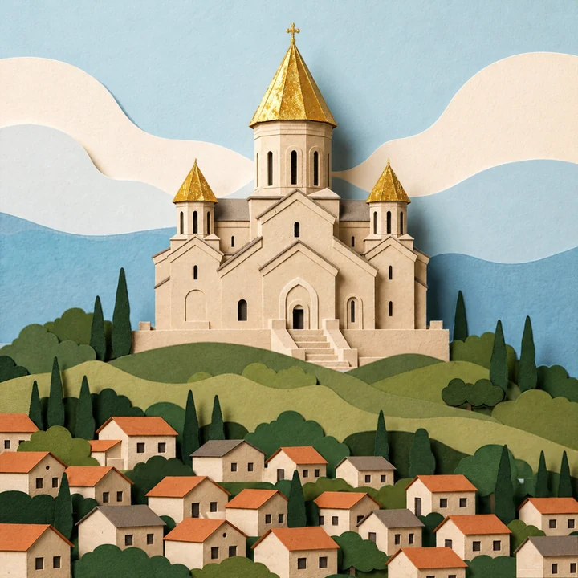
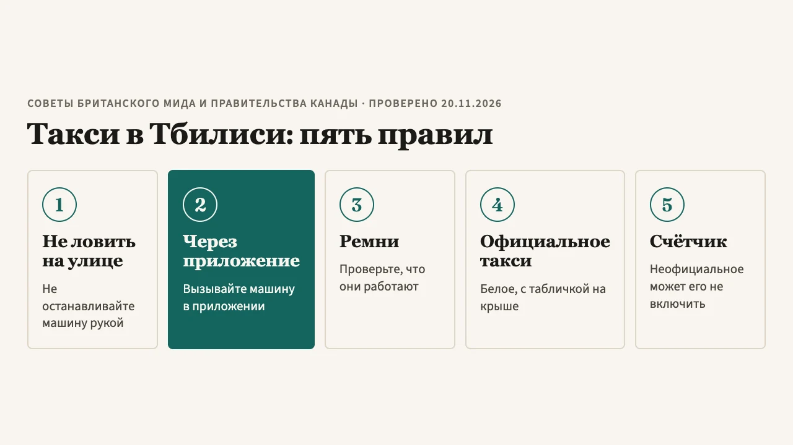
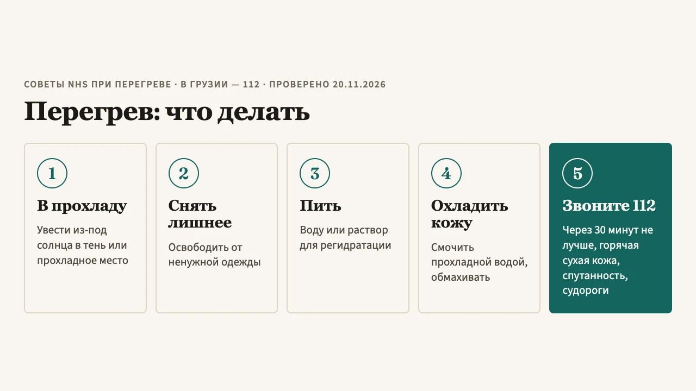
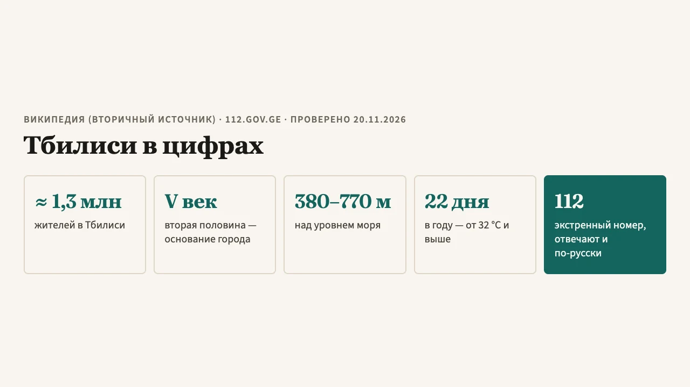

- Население
- около 1,3 млн
- Высота над морем
- 380–770 м
- Июль в среднем
- 25,4 °C
- Дней от 32 °C
- около 22 в год
- Скорая и полиция
- 112
Статья входит в «Путеводитель по Грузии». Тбилиси, Грузия — город, где на 1 января 2026 года жили 1 309 028 человек, то есть около 1,3 млн, по данным Википедии. Основание города связывают с царём Иберии Вахтангом Горгасали и относят ко второй половине V века. Название происходит от слова «тбили» — «тёплый»: так город назвали из-за тёплых серных источников. Он лежит на высоте от 380 до 770 м над уровнем моря. Проверено 20 ноября 2026 года.
Что посмотреть в Тбилиси: главные достопримечательности
Для первого приезда хватит Старого города с крепостью Нарикала и храмами, собора Самеба, Моста Мира, проспекта Руставели, горы Мтацминда и музеев. Это главные достопримечательности Тбилиси, их обходят за один–три дня.
Наш совет: решая, куда сходить в Тбилиси утром, выбирайте подъёмы — к крепости, к собору и на гору, а в середине дня уходите в музеи.
Мост Мира и парк Рике
Это пешеходный мост через Куру из стекла на стальном каркасе. Он соединяет улицу Ираклия II и парк Рике.
Мост открыли 6 мая 2010 года, проект сделал архитектор Микеле де Лукки.
Проспект Руставели и площадь Свободы
Проспект тянется около 1,5 км — от площади Свободы до площади Руставели.
Что на проспекте. Парламент (дом 8), Национальный музей Грузии (дом 3), театр оперы и балета имени Палиашвили, театр Руставели и русский драматический театр имени Грибоедова.
Площадь Свободы. Она сменила много имён — была Эриванской, площадью Берии и площадью Ленина. С 23 ноября 2006 года здесь стоит Памятник Свободы работы Зураба Церетели: святой Георгий, убивающий дракона.
О демонстрациях у парламента — в разделе о безопасности.
Цминда Самеба
Это второй после Светицховели кафедральный собор Грузинской православной церкви. Он стоит на холме Святого Ильи, на левом берегу Куры.
Собор строили с 1995 года и освятили 23 ноября 2004-го. По данным Википедии, по высоте он третий в мире среди православных храмов: 77 м до подножия креста, а сам крест — ещё 7,5 м. Весь храмовый комплекс вокруг собора вмещает до 15 тысяч верующих.

Гора Мтацминда и фуникулёр
Мтацминда — «Святая гора» высотой 730 м, часть Триалетского хребта. На вершине с 1938 года есть парк, там же стоит телебашня 1972 года высотой 277,4 м.
Тбилисский фуникулёр открыли 30 декабря 1905 года. У него три станции — «Нижняя», «Пантеон» и «Мтацминда», перепад высот — 235 м.
Наш совет: наверх поднимайтесь в вагоне. Вниз идите пешком, только если колени здоровы и день прохладный.
Черепашье озеро и Тбилисское море
Это два места для отдыха у воды в черте города: небольшое озеро на склоне горы и большое водохранилище.
Черепашье озеро. Оно лежит на северном склоне Мтацминды, на высоте 686,7 м. Название дали из-за обилия черепах, которые там раньше жили; вокруг — галечный пляж. Подняться можно по автодороге или на канатной дороге от Ваке-парка.
Тбилисское море. Это искусственное водохранилище на северо-востоке города площадью около 11,6 км². Рядом стоит «Летопись Грузии» Зураба Церетели (1985): 16 колонн высотой от 30 до 35 м. Памятник так и не закончили полностью.
Музеи Тбилиси
Главные музеи столицы входят в Грузинский национальный музей — объединение, основанное 30 декабря 2004 года.
Что входит в сеть. Музей Грузии имени Симона Джанашиа, Государственный музей искусств, Музей советской оккупации, музей истории города, Национальная картинная галерея и этнографический музей под открытым небом имени Гиоргия Читаиа. Музей Грузии стоит на проспекте Руставели, 3.
Когда идти. Наш совет: идите в музеи в середине дня — в те часы, когда NHS советует избегать солнца.
Фабрика. Это пространство на месте советской швейной фабрики; журнал об архитектуре ArchDaily называет его многофункциональным пространством нового типа.
Старый Тбилиси: крепость Нарикала, храмы и Сухой мост
Старый город — исторический центр в юго-восточной части столицы. Здесь больше всего домов XIX века, но есть здания и V века. Границы района в разных источниках проводят по-разному.
Наш совет: наденьте удобную обувь с нескользкой подошвой.

Крепость Нарикала и Мать Грузии
Крепость стоит на правом скалистом берегу Куры. В IV веке она уже существовала и называлась Шурис-Цихе. Сохранилась часть Стамбульской башни XVI века, а из парка Рике к крепости протянута канатная дорога.
Мать Грузии. Статую Картлис Деда поставили на Сололакском хребте в 1958 году деревянной, а в 1963-м заменили алюминиевой. Высота — 20 м, скульптор — Элгуджа Амашукели. В левой руке у неё чаша с вином для друга, в правой — меч для врага.
Как совместить прогулку у стен крепости с банями — подробнее о Нарикале и канатной дороге.
Абанотубани и серные бани
Абанотубани — исторический район бань на естественных сернистых источниках. Название сложено из слов «абано» (баня) и «убани» (район). По легенде, здесь Вахтанг Горгасали выпустил сокола на пролетавшего фазана.
Как выбрать баню и кому осторожно в горячей серной воде, рассказываем в отдельной статье путеводителя.
Метехи, Сиони и Анчисхати
Это три храма разных эпох: Анчисхати — VI века, нынешний Сиони — XII века, Метехи — XIII века.
Метехи. Церковь Успения Пресвятой Богородицы стоит на скале над Курой. Рядом с ней в 1967 году открыли памятник Вахтангу Горгасали.
Сиони. Исторически главный храм города: первый храм связывают с концом VI века, а нынешний собор возвёл Давид IV Строитель в 1112 году. В 1795 году собор сильно пострадал от войска Ага-Мухаммед-хана. В нём хранится крест святой Нины.
Анчисхати. Церковь VI века на улице Шавтели — самая старая из сохранившихся в городе. Второе имя она получила в 1675 году, когда сюда перенесли икону «Анчийский Спас».
Ботанический сад
Сад лежит у подножия горы, на которой стоит крепость. Главный вход — в конце Ботанической улицы. Официально сад основали в 1845 году. Внутри есть арочный мост над водопадом 1914 года.
Сухой мост
Это автомобильно-пешеходный мост над бывшим рукавом Куры, построенный в 1848–1851 годах по проекту Дж. Скудьери. В конце 1980-х — начале 1990-х у моста возник блошиный рынок.
Тбилиси за 1, 2 и 3 дня: маршрут
За один день успеете Старый город и крепость. За два — ещё Самебу, проспект Руставели и Мтацминду. За три — музеи и Черепашье озеро или поездку на день за город.
| День | Утро: подъёмы | С 11 до 15: под крышей | Вечер |
|---|---|---|---|
| 1 | Крепость, Мать Грузии | Сиони, Анчисхати | Абанотубани, Мост Мира |
| 2 | Самеба, Метехи | Музей Грузии на Руставели | Площадь Свободы, Мтацминда |
| 3 | Черепашье озеро или поездка | Картинная галерея, Музей искусств | Сухой мост, Фабрика |
Наш совет: в середине дня уходите под крышу — в музеи и храмы, а время в пути проверяйте перед выходом: в таблице его нет. Почему именно с 11 до 15 — в блоке «Как не перегреться в городе».

Как передвигаться: метро, такси и пешком
По городу ходит подземка из двух линий, машину вызывают через приложение, а пешком мешают перепады высот и неровные тротуары.
Тбилисский метрополитен
Метро открыли 11 января 1966 года. В нём 23 станции на двух линиях, пересадка одна — на станции «Садгурис моедани» (Вокзальная площадь). По данным Википедии, за год подземка перевозит около 150 млн пассажиров.
Автобусы и метро в целом безопасны и надёжны, но туристов могут обокрасть карманники. Чем ещё ездить по городу и стране — городской транспорт и альтернативы маршруткам.
Такси: как не ошибиться
Машину не ловите на улице: заказывайте её через приложение и проверьте, что ремни безопасности работают.
Как узнать официальное такси. Оно белое, с табличкой на крыше, а неофициальные машины могут ездить без счётчика.
Из аэропорта. Если вы только прилетели, вот как доехать из аэропорта.

Пешком: холмы, тротуары и переходы
Ходить пешком можно, но город лежит на высоте от 380 до 770 м, а один только фуникулёр на Мтацминду поднимает на 235 м.
Тротуары. Вдали от главных улиц тротуары бывают неровными, а освещение — слабым. В центре идёт стройка.
Переходы и воздух. Пешеходы часто переходят посреди дороги, а водители не всегда их пропускают. Загрязнение воздуха может быть опасным, особенно в столице. Наш совет: переходите по разметке и не рассчитывайте, что машина остановится.
Тбилиси летом: жара и тепловой удар
Самый жаркий месяц — июль: в среднем 25,4 °C, а 32 °C и выше бывает в среднем 22 дня в году, по данным английской Википедии. Рекорд — +42,0 °C, 17 июля 1882 года.
Погоду по сезонам разбираем в статье «Когда лучше ехать в Грузию».
Признаки перегрева и что делать
Тепловое истощение снимают прохладой и водой, а тепловой удар — повод сразу вызывать скорую.
Тепловое истощение. Признаки: усталость, головокружение, головная боль, тошнота или рвота, сильный пот и бледная липкая кожа, судороги в мышцах, высокая температура, сильная жажда.
- Отведите человека в прохладное место.
- Снимите лишнюю одежду.
- Дайте много воды — подойдёт и раствор для регидратации.
- Охладите кожу водой или обмахиванием, холодные пакеты в ткани положите под мышки и на шею.
Не оставляйте человека одного: полегчать должно в течение 30 минут.
Когда звать неотложную помощь. Через 30 минут не легче, кожа горячая и не потеет, температура очень высокая, дыхание и пульс частые, есть спутанность, судороги или потеря сознания.
Пока ждёте помощь. Накройте человека прохладной мокрой простынёй, обмахивайте или обтирайте холодной водой.

Как не перегреться в городе
- пейте больше прохладных напитков, особенно если вы активны или много двигаетесь;
- носите светлую свободную одежду;
- с 11 до 15 часов избегайте солнца;
- меньше алкоголя и тяжёлых нагрузок.
Как разложить подъёмы и музеи по часам — в маршруте по дням.
Вода и уличные собаки
Воду проще покупать в бутылках, а укус или царапина собаки — повод сразу ехать за медпомощью.
Можно ли пить воду из-под крана
Однозначного ответа в официальных советах нет. GOV.UK отмечает только, что качество воды в Грузии разное, а бутилированная продаётся повсеместно.
Общий совет правительства Канады про еду и питьё — «кипятите, варите, чистите или откажитесь». Наш совет: пейте бутилированную воду.
Уличные собаки и бешенство
Если собака укусила или поцарапала, сразу идите к врачу. Лечение от бешенства в столице и крупных городах есть.
Что делать по шагам — где сделать прививку от бешенства.
Безопасно ли в Тбилиси
Правительство Великобритании оценивает уровень преступности в Грузии как низкий, но в людных местах бывают карманники. При угрозе оно советует звонить по единому экстренному номеру и просить полицию.
Демонстрации. Сейчас они проходят в основном у здания парламента на проспекте Руставели, больших скоплений людей лучше избегать. Правительство Канады из-за риска демонстраций и столкновений советует в столице «высокую степень осторожности».
Дата советов. Страница GOV.UK о Грузии обновлена 12 ноября 2026 года. Подробнее — в статье «Безопасно ли в Грузии».
Если нужна помощь: 112, врач и лекарства в Тбилиси
При угрозе жизни сначала звоните 112, затем без задержки свяжитесь со страховщиком. Это единый экстренный номер Грузии: его ввели в 2012 году, вызовы принимают круглосуточно.
Язык. Операторы говорят по-грузински, по-английски, по-азербайджански, по-армянски, по-турецки и по-русски. Подробно о звонке — как вызвать скорую и полицию.
Лечение. Медпомощь в столице есть, но может быть дорогой, а за её пределами — ограничена. Платить за лечение нужно сразу — вам или вашему страховщику. Качественная медпомощь обычно доступна в крупных городах, таких как Тбилиси и Батуми.
Каталог. Врачи и клиники столицы в каталоге 100doc.ge — на 20 ноября 2026 года там 2 252 врача и 574 клиники.
Лекарства. До поездки проверьте, какие лекарства можно ввезти. Наш совет: свои лекарства берите с запасом.

Куда съездить из Тбилиси на день
О каждой из пяти поездок на день в путеводителе есть отдельная статья: Мцхета, Казбеги, Давид Гареджи, Сигнахи и Уплисцихе.
Море — отдельная поездка: вот путеводитель по Батуми.
Частые вопросы
Где находится Тбилиси?
Сколько дней нужно на город?
На центр и крепость хватит одного дня. За два добавьте Самебу, Руставели и Мтацминду, за три — музеи и Черепашье озеро. По дням — в таблице маршрута.
Жарко ли в Тбилиси в августе?
Что делать при тепловом ударе?
Тбилиси или Батуми?
Это разные поездки: в столице — исторический центр, храмы, музеи и холмы, а к морю едут в Батуми.
Как в Тбилиси с детьми пережить жару?
Источники
- Русская Википедия: Тбилиси (вторичный источник) ↑
- Русская Википедия: Мост Мира (вторичный источник) ↑
- Русская Википедия: Проспект Руставели (вторичный источник) ↑
- Русская Википедия: Площадь Свободы (вторичный источник) ↑
- Правительство Великобритании (GOV.UK): безопасность в Грузии (на английском) ↑
- Русская Википедия: Цминда-Самеба (вторичный источник) ↑
- Русская Википедия: Мтацминда (вторичный источник) ↑
- Русская Википедия: Тбилисский фуникулёр (вторичный источник) ↑
- Русская Википедия: Черепашье озеро (вторичный источник) ↑
- Русская Википедия: Тбилисское море (вторичный источник) ↑
- Русская Википедия: Летопись Грузии (вторичный источник) ↑
- Русская Википедия: Грузинский национальный музей (вторичный источник) ↑
- ArchDaily: Фабрика в Тбилиси (на английском) ↑
- Русская Википедия: Старый Тбилиси (вторичный источник) ↑
- Русская Википедия: Нарикала (вторичный источник) ↑
- Русская Википедия: Мать Грузии (вторичный источник) ↑
- Русская Википедия: Абанотубани (вторичный источник) ↑
- Русская Википедия: Метехский храм (вторичный источник) ↑
- Русская Википедия: Сиони (вторичный источник) ↑
- Русская Википедия: Анчисхати (вторичный источник) ↑
- Русская Википедия: Тбилисский ботанический сад (вторичный источник) ↑
- Английская Википедия: Национальный ботанический сад Грузии (вторичный источник) (на английском) ↑
- Русская Википедия: Сухой мост (вторичный источник) ↑
- NHS: тепловое истощение и тепловой удар (на английском) ↑
- Русская Википедия: Тбилисский метрополитен (вторичный источник) ↑
- Правительство Канады: рекомендации для путешественников, Грузия (на английском) ↑
- Английская Википедия: Tbilisi — климат (вторичный источник) (на английском) ↑
- Правительство Великобритании (GOV.UK): здоровье (на английском) ↑
- Правительство Великобритании (GOV.UK): советы по Грузии, дата обновления (на английском) ↑
- 112.gov.ge: о службе 112 (на английском) ↑
- 112.gov.ge: на каких языках отвечают операторы (на английском) ↑
Это справочная информация, а не медицинская консультация. Проверено 20 ноября 2026 года.